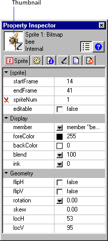

Using Director > Sprites > Displaying and editing sprite properties > Displaying and editing sprite properties in the Property Inspector
Using Director > Sprites > Displaying and editing sprite properties > Displaying and editing sprite properties in the Property Inspector |
Displaying and editing sprite properties in the Property Inspector
Depending on your preference, you can use either the Sprite toolbar or the Property Inspector to perform many of the same procedures.
To display and edit sprite properties in the Property Inspector:
1 |
Select one or more sprites on either the Stage or the Score. |
2 |
If the Property Inspector is not open, choose Window > Inspectors > Property. |
The Property Inspector opens with focus on the Sprite tab. The Graphical view is the default view. You can toggle to the List view by clicking the List View Mode icon. |
|
The Property Inspector displays settings for the current sprite. If you select more than one sprite, the Property Inspector displays only their common settings.
 |
|
A thumbnail image of the sprite's cast member appears in the upper left corner of the Property Inspector. |
|
Note: To open a window in which you can edit the sprite's cast member, you can double-click the thumbnail image. |
|
3 |
Edit any of the following sprite settings in the Property Inspector: |
Start Frame and End Frame display the start and end frame numbers of the sprite. Enter new values to adjust how long the sprite plays. See Changing the duration of a sprite on the Stage.
|
|
Lock changes the sprite to a locked sprite so you or other users cannot change it. For additional information on locked sprites, see Locking and unlocking sprites.
|
|
Editable applies only to text sprites, and lets you edit the selected text sprite on the Stage during playback. See Selecting and editing text on the Stage.
|
|
Moveable lets you position the selected sprite on the Stage during playback. See Visually positioning sprites on the Stage.
|
|
Trails makes the selected sprite remain on the Stage, leaving a trail of images along its path as the movie plays. If Trails is not selected, the selected sprite is erased from previous frames as the movie plays.
|
|
Flip Horizontal and Flip Vertical reverse the sprite horizontally or vertically to form an inverted image. See Flipping sprites.
|
|
The Ink pop-up menu displays the ink of the current sprite and lets you choose a new ink color. See Using sprite inks. |
|
Blend determines the blend percentage of the selected sprites. See Setting blends. |
|
Foreground and Background color boxes determine the colors of the selected sprite. See Changing the color of a sprite. |
|
Reg Point Horizontal (X) and Vertical (Y) display the location of the registration point in pixels from the top left corner of the Stage. See Editing sprite properties with Lingo. |
|
Width (W) and Height (H) show the size of the sprite's bounding rectangle in pixels. |
|
Rotation Angle rotates the sprite by the number of degrees you enter. See Rotating and skewing sprites. |
|
Skew Angle slants the sprite by the number of degrees you enter. See Rotating and skewing sprites. |
|
Left, Top, Right, and Bottom show the location of the edges of the sprite's bounding rectangle. |
|
Restore All reverts the height and width to that of the cast member. |
|
Scale opens the Scale Sprite dialog box, where you can resize the selected sprite. See Resizing and scaling sprites. |
|